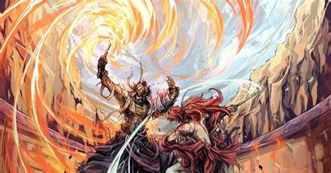

Himura Kenshin es un experto samurái quien en un momento de su pasado (comprendidos entre sus 14 y 19 años) puso su habilidad al servicio de los Ishin Shishi (Patriotas de la Restauración) como hitokiri (homicida, loco, destajador). Durante esta época recibió el nombre de Hitokiri Battōsai (Battōsai el Homicida o el destajador) y fue el asesino más famoso y temido de estos tiempos. Terminados los enfrentamientos, decide pasar al anonimato y desde entonces se convierte en un vagabundo que recorre el país ayudando a la gente como una forma de resarcirse por todas las vidas que tomó, jurando que nunca más volvería a tomar otra vida. Porta con él una sakabatō, katana donde el filo y el lado romo están invertidos y le permite utilizar su estilo de kenjutsu, el Hiten Mitsurugi Ryū, sin riesgo que el mismo sea mortal.
La historia comienza en el año 11 de la Era Meiji, diez años después de finalizar el Bakumatsu y con él, la Era Tokugawa; al llegar Kenshin a Tokio, conoce a Kamiya Kaoru, una adolescente de 17 años que es huérfana de ambos padres. La joven trabaja como instructora suplente de un dojo de Kendo donde se practica el estilo Kamiya Kashin Ryū heredado de su padre. Luego de que Kenshin la salvara de un grupo de ladrones empeñados en quedarse con su propiedad, quienes en realidad eran unos antiguos alumnos del dojo los cuales para mancillar la reputación del mismo y quienes a modo de venganza por haber sido expulsados por el padre de la joven, usaban el nombre de Battōsai para cometer múltiples homicidios en la ciudad, afirmando a viva voz que usaba el estilo practicado en el dojo de Kaoru para sus crímenes. Kaoru le invita a quedarse a vivir con ella hasta que decida volver a vagabundear, restándole importancia al pasado del joven lo cual lo deja muy sorprendido. Con el tiempo se les unirán Yahiko Myōjin, un niño huérfano que era obligado a robar en las calles por un grupo de yakuza y es salvado por Kenshin y puesto a entrenar con Kaoru; Sagara Sanosuke, un luchador a sueldo que odia profundamente a los Ishin Shishi; y Takani Megumi una doctora involucrada involuntariamente en el oscuro mundo del tráfico de drogas que busca a su familia perdida de Aizu.
Los problemas surgirán cuando distintos enemigos relacionados con el oscuro pasado de Kenshin hagan aparición. A muchos de ellos los moverán intereses superficiales, otros en cambio serán antiguos enemigos que buscarán venganza.
En uno de esos momentos, aparece en la historia Hajime Saitō, el antiguo capitán del grupo 3 de los Shinsengumi contra el cual Kenshin luchó en el Bakumatsu, quien ha regresado haciéndose pasar por el oficial de la policía japonesa, Goro Fujita. En un momento dado, ambos samuráis luchan y es entonces cuando se descubre la razón de la reaparición de Saito en la vida de Kenshin: un antiguo Hitokiri el cual reemplazó a Kenshin en los asesinatos a políticos en secreto después de que este se retiró y cuyo nombre es Makoto Shishio, prepara un golpe de Estado para hacerse con el control del país a modo de vengarse del Gobierno Meiji después que este lo traicionara quemándolo vivo puesto que su existencia era demasiado peligrosa debido a la gravedad de los magnicidios que cometió y por temor a que los sacara a la luz, con la consecuente caída del Gobierno. El Ministro del Interior del país (pero que en la práctica ejercía funciones propias de un primer ministro y gobernaba el país con plenos poderes), Ōkubo Toshimichi le pide a ambos guerreros que eliminen a Shishio debido a su peligrosidad ya que ha establecido su cuartel general en la ciudad de Kioto. Aunque Saito acepta la misión, Kenshin en un inicio se niega a aceptar la petición del Gobierno. No obstante, Okubo es asesinado por uno de los hombres de Shishio, lo cual hace que Himura acepte los hechos y vuelva a vagabundear una vez más rumbo a Kioto para salvar a su país de las manos del revolucionario y su organización. Antes de marcharse, Kenshin decide no hablar con nadie de su decisión, a excepción de Kaoru, de quien se despide de una forma muy emotiva, no sin antes darle las gracias por haber creído y confiado en el. Kaoru queda devastada después de esta despedida y sin ánimos de nada. Sin embargo gracias a Yahiko y Megumi, Kaoru se decide a seguir a Kenshin a tan peligroso viaje mientras que Sanosuke igualmente hacía lo propio.
En su viaje a Kioto, conoce a una joven kunoichi de nombre Makimachi Misao, la cual guarda una relación muy profunda con los Oniwabanshū: una organización de espías ninja al servicio del Bakufu a quienes Kenshin confrontó en el pasado. Kenshin sin querer revela que se cruzó con su líder, Aoshi Shinomori, pero no le cuenta a Misao que él y Aoshi se enfrentaron ni lo que pasó con los otros Oniwabanshū que estaban con él, los cuales murieron. Por supuesto Misao, que estaba más que decidida a reencontrarse con Aoshi y los otros ninjas, decide acompañar a Himura en su viaje.
En el transcurso de su viaje, Kenshin y Misao llegan a una aldea abandonada por el gobierno Meiji y que ahora controla Shishio con puño de hierro, cuya responsabilidad corre a cargo de un subordinado llamado Senkaku. Kenshin (acompañado de Saito quien no interviene en la lucha) y Senkaku se enfrentan pero este último es vencido por Kenshin quien revela sus habilidades como espadachín a Shishio (el cual se encontraba allí) prácticamente por obligación dado que Shishio amenazó con matarlo si no lograba hacer que Kenshin peleara en serio. Cuando Kenshin está por confrontar a Shishio, este escapa dejando a su más fuerte subordinado, un joven llamado Seta Sōjirō para que peleara con él. Se revela luego que Sōjirō fue el asesino de Okubo y para peor, cuando ambos rivales chocan sus espadas en un único ataque, la Sakabatō de Himura se parte en dos dejando en claro la superioridad de su adversario quien, considera un empate la lucha. Esto último basta para persuadir a Kenshin para viajar a Kioto y buscar a dos personas muy importantes para él. Es en este punto de la historia donde conocemos un poco más del turbulento pasado de Kenshin cuando se nos presenta a la persona que creó la Sakabatō, Shakku Arai (el cual ya falleció) y por intermedio de su hijo, Seiko a quien Kenshin ayuda luego de salvar a su hijo de uno de los secuaces de Shishio, consigue la versión original de la Sakabatō. Y luego a su maestro, Seijuro Hiko, el cual Kenshin encuentra gracias a la ayuda de Okina, el anciano que cuidó de Misao y quien resulta ser un integrante del grupo Oniwabanshū, al igual que los empleados del restaurante que maneja en Kioto. Kenshin completa su entrenamiento y finalmente está listo para luchar contra Shishio y su organización, pero el cómplice de este último que luchó contra Kenshin, traiciona a su amo al revelar el retorcido plan de conquista del país usando para ello un avanzado (para la época) barco de guerra para bombardear a Tokio desde la costa mientras sus hombres provocaban un incendio en Kioto. Con ayuda de los Oniwabanshū, Kenshin en compañía de Sanosuke y Saito, frustra los planes de Shishio y este reta a Himura a un último y decisivo enfrentamiento en su escondite.
En el subsecuente enfrentamiento, Kenshin junto a sus amigos y los Oniwabanshū, derrotan a casi todos los hombres de Shishio, incluyendo a sus escoltas personales, el Jūppon Gatana. Tras un épico combate, Kenshin derrota mas no llega a matar a Shishio ya que debido a sus quemaduras, su temperatura corporal aumentaba bruscamente si entraba en actividad física por un espacio mayor a quince minutos, causando que su cuerpo se incendie por exceder su tiempo límite.
Para finalizar este arco, en él manga se muestra un final feliz en donde todos vuelven a Tokio y Kenshin admite por fin que junto a Kaoru está su hogar. En el anime también se puede ver esta escena, sin embargo los capítulos posteriores no son oficiales y el final del anime es diferente.
En el siguiente arco, llamado Jinchuu o saga de la venganza vemos que un viejo enemigo de su oscuro pasado reaparece, atacando a todos aquellos que guarden alguna relación con él. Este hombre se llama Enishi. Enishi, un poderoso jefe del crimen de Shanghái, guarda un profundo rencor contra Kenshin a quien acusa de haberle causado una dolorosa tragedia que causó que su pelo se tornara blanco por el dolor que le produjo y a una mujer involucrada con su pasado como Hitokiri durante el Bakumatsu. Himura y sus aliados se defienden de los cómplices de Enishi, un grupo de individuos que guardan rencor a Himura porque este se cruzó en sus vidas de una forma o de otra. Tras ver cuan grave era todo este problema, Kenshin le cuenta a sus amigos toda su historia como Hitokiri que involucra no solo a Enishi, si no a su hermana, una mujer llamada Tomoe Yukishiro quien para la sorpresa de todos, pero más de Kaoru, era la esposa de Himura, a quien asesinó con sus propias manos. En esta parte de la historia Kenshin cuenta su vida y anécdotas pasadas como Hitokiri y cuando conoce a Tomoe, la misteriosa mujer quien se convierte en su esposa y con la cual convive medio año. Sin embargo, ambos estaban destinados a un trágico final pues Tomoe era una espía encargada de otorgar información para asesinar a Battousai, ya que este, en uno de sus trabajos como Hitokiri asesina Akira Kiyosato, prometido de Tomoe el cual fue responsable de la cicatriz de Kenshin en su mejilla izquierda. A pesar de las circunstancias que la llevaron a relacionarse con Kenshin, Tomoe se enamora de él y en un acto de trágico amor se interpone en una de las batallas de Battousai y es herida por accidente por su espada. Tomoe muere en los brazos de Kenshin, el cual queda destrozado al perder a la persona más importante para el. Después de este incidente, Kenshin promete que al finalizar su trabajo como Hitokiri, no volverá a matar. Es así como se convierte en un Samurai vagabundo. Cabe destacar que fue Tomoe quien finalizó la cicatriz en forma de cruz, aunque de formas distintas en el manga y en las Ovas. Después de 18 años, Enishi, el hermano menor de Tomoe llega a Japón después de un arduo entrenamiento en China, para vengarse de Kenshin de la forma más despiadada. Después de una lucha constante que involucra a Kenshin y sus amigos y a Enishi y sus séquitos, llega el momento de la verdadera venganza de Enishi; secuestra a Kaoru, no sin antes mostrar ante Kenshin un muñeco exacto de Kaoru, atravesado por una espada y con una marca de cruz en su mejilla (haciendo una referencia cruel a la cicatriz del protagonista) Después de este incidente, en el que se dio por muerta a Kaoru en el manga, Kenshin entra en un estado de depresión profundo, en el cual se rinde física como emocionalmente, sin ganas de seguir viviendo. Este hecho marcó considerablemente a los lectores pues es primera vez que se muestra a Kenshin en un estado deplorable, perdiendo la voluntad de vivir. Después de haber pasado por un “infierno” psicológico, donde Kenshin se debate entre la verdadera razón de vida y su forma de expiar sus pecados por haber sido un asesino, llega a la conclusión de su propia verdad con la ayuda de un misterioso y gracioso personaje llamado “Oibore” y a Tsubame, quien llega a rogarle que ayude a Yahiko, quien luchaba con Hyogo, después de que este escapara de su celda.
Después de este tortuoso acontecimiento, Tomoe se presenta en un sueño y se despide de Kenshin, pidiéndole que cuide a Enishi y dándole a entender que Kaoru seguía viva. Mientras tanto, Enishi, quien mantenía secuestraba a Kaoru, comienza a tener dificultades en su deseo de asesinarla para darle sufrimiento a Kenshin debido a que Kaoru le recuerda a su hermana mayor. Finalmente, Kenshin y compañía llegan a rescatar a Kaoru, con la firme convicción de que su propósito de vida y su forma de remediar sus pecados es vivir y luchar por la persona más importante para él, en este caso Kaoru y sus amigos. Al final de la batalla en que se vieron involucrados la mayoría de los personajes principales (como Saito y Aoshi) y otros personajes nuevos, Enishi se rinde en su propósito y es detenido por sus crímenes. Kaoru, sin embargo, le entrega el diario de Tomoe, donde ella escribía sus sentimientos y secretos.
Para finalizar este tomo, Kaoru y Kenshin se despiden de Tomoe frente a su tumba, cerrando así el pasado de Kenshin. Otros protagonistas toman rumbos diferentes buscando sus respectivas vidas. Kenshin y Kaoru se casan y tienen un hijo al que llaman Kenji y viven junto a Yahiko en el dojo Kamiya.
El creador de Rurouni Kenshin sorprendió con un nuevo arco llamado “el arco de Hokkaido” donde veremos nuevas aventuras, personajes y tramas políticos, con nuevas ilustraciones. Este arco sin embargo aún no está terminado.
VOLVER